Speelvilla
Zeist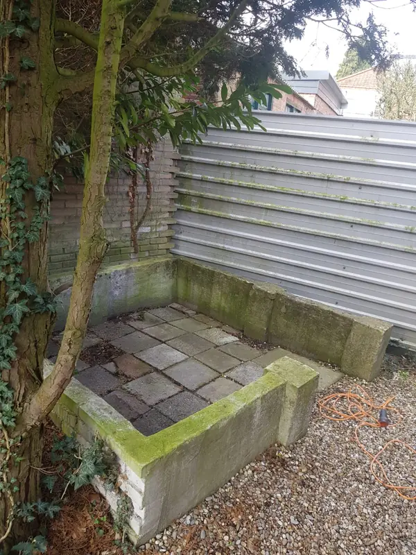
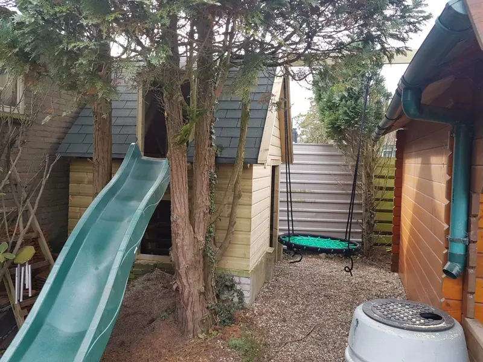
Een grote speelvilla met etage en glijbaan, ontworpen en gemaakt.
Verbouw · Keuken en badkamer · Zolder en dak · Tuin en buitenhout
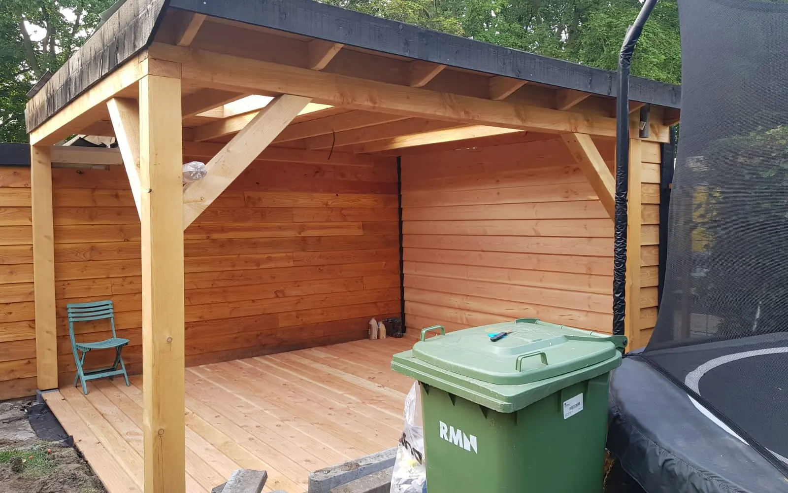
"Veel van wat je tegenwoordig mist bij (grotere) bouwbedrijven" vond Jurriën bij De Raaf.
Eigen werk van De Raaf, met foto's van vóór en na. Plaats en omschrijving komen van de huidige site.


Een grote speelvilla met etage en glijbaan, ontworpen en gemaakt.
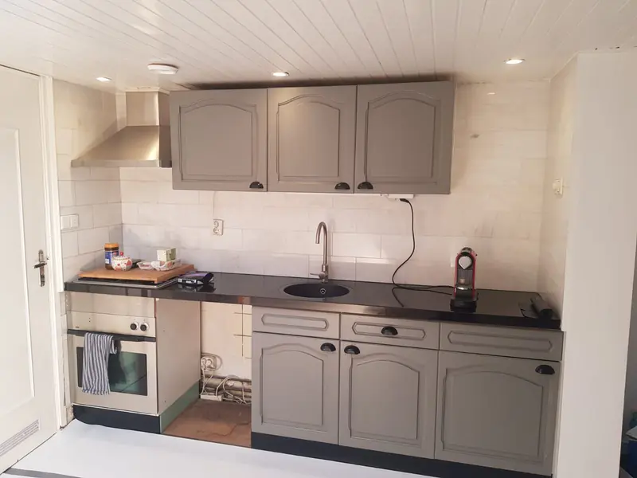
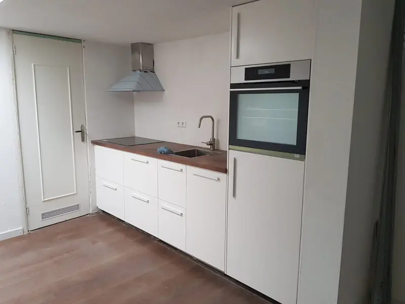
Bestaande keuken gedemonteerd, nieuwe keuken geplaatst, leidingen verlegd en de ruimte gemoderniseerd.
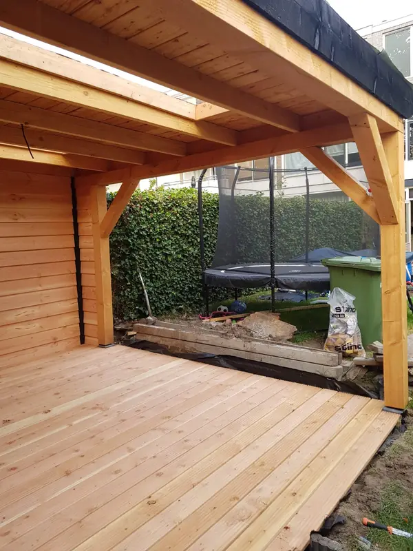
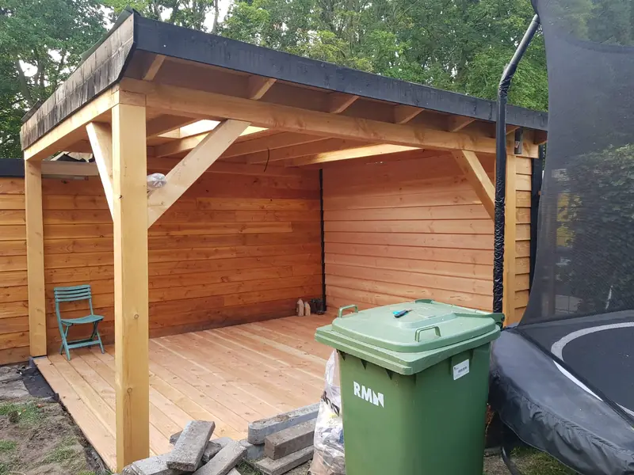
Een Douglas houten veranda met overkapping, ontworpen en gemaakt.
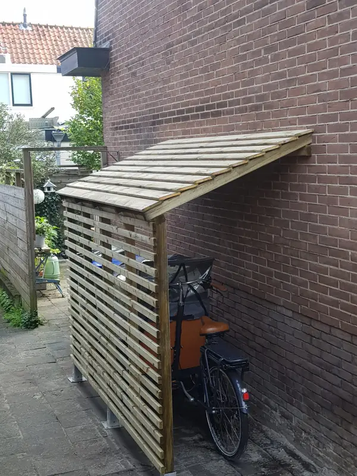
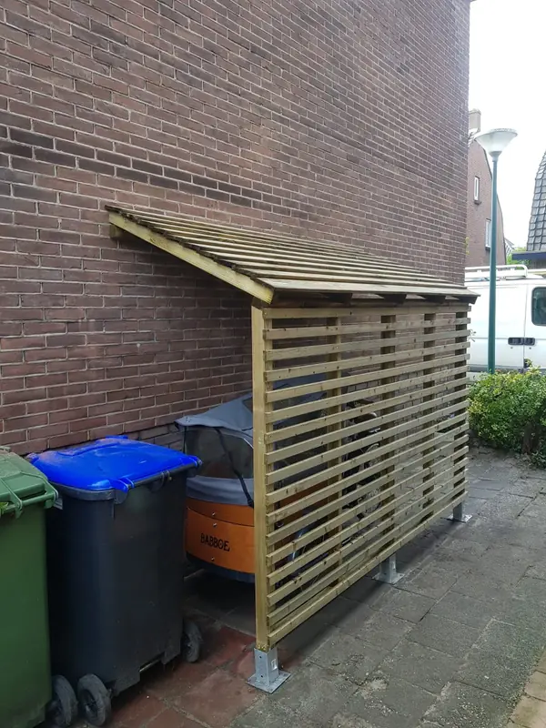
Een afdak voor de fietsen tegen de gevel, ontworpen en gemaakt.
Zeven soorten werk, in twee groepen.
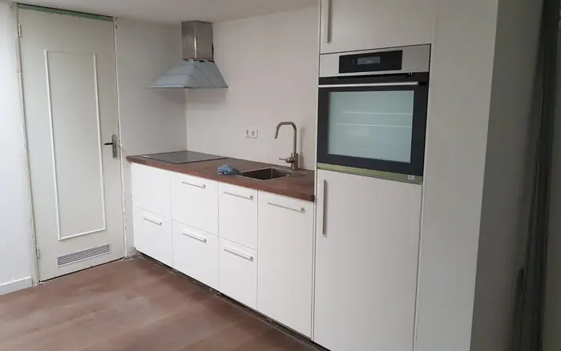
Keuken, badkamer, zolderverbouwing en dak vervangen.
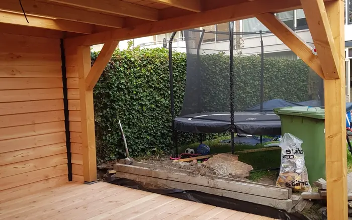
Veranda en overkapping, speelhuis op maat, afdak en schutting.
"Vakman met oog voor detail!. Michiel denkt mee en werkt netjes en secuur. Wij zijn heel tevreden over de zolderverbouwing met badkamer"
"Een jaar geleden heeft Michiel samen met zijn collega's bij ons het dak vervangen. Een jaar later ziet het er nog steeds heel goed uit! Fijne communicatie en professioneel vakman!"
Binnen of buiten: vertel wat u voor ogen heeft, dan wordt er meegedacht.